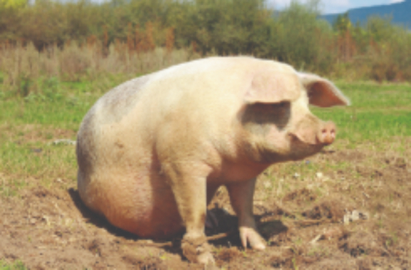
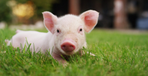
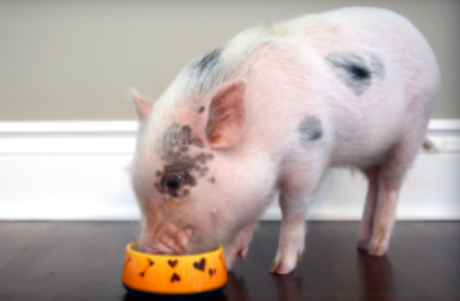
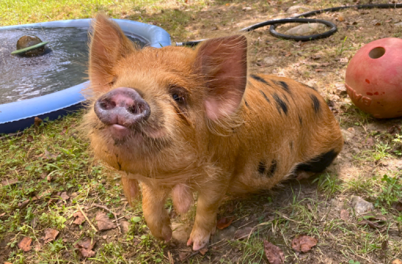
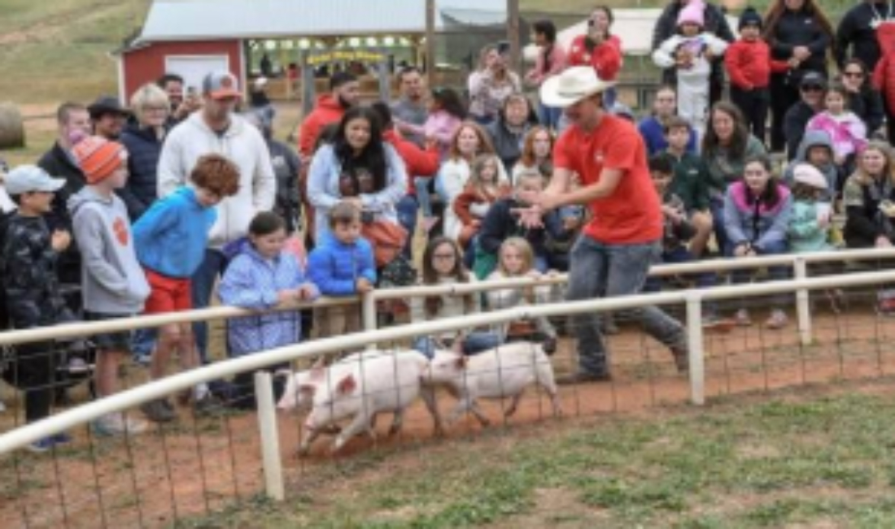
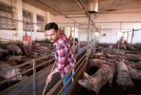
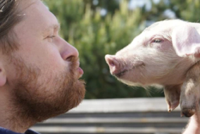

Hvít svín

Grísamarkaðurinn




| Svín | Stærð | Þyngd | Aldur |
|---|---|---|---|
| Hvít svín | Stórt | 100-130 kg | 10-15 ár |
| Mini pig | 35-50 cm | 30-90 kg | alt að 20 ár |
| Kunekune | 45-66 cm | 50-90 kg | 15-20 ár |

Á Svínadegi er boðið upp á fjölbreytta og skemmtilega dagskrá fyrir alla aldurshópa. Það verða kynningar á svínarækt, þar verður sagt frá ræktuninni, umhirðu dýranna og hvernig gæðakjöt verður til frábært tækifæri til að fræðast og kynnast greininni nánar. Á svæðinu verða fjölmargir matarbásar þar sem hægt verður að fá allskonar, nýjar uppskriftir og hefðbundna íslenska matargerð. Gestir geta líka tekið þátt í spennandi happdrætti þar sem aðal vinningurinn er frítt svín að eigin vali sannkölluð veisla fyrir heppinn vinningshafa! Auk þess verður ýmis að gera fyrir börnin, leikir, tónlist og létt stemning sem gerir daginn að sannri fjölskylduhátíð.
Dagsetning: 20. júní ár hvert
Tími: 11:00 – 16:00
Sveitabærinn á Eyrarbakka er fjölskyldurekið býli sem leggur áherslu á velferð svína, sjálfbærni og persónulega þjónustu, öll svínin fá fullt af ást og umhyggju og eru alltaf með bestu mögulega heilsu.

